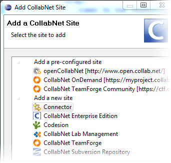
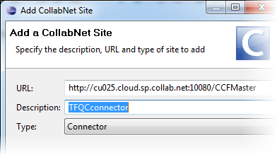
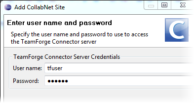
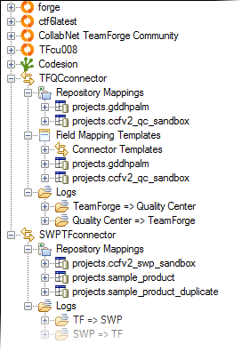

To add a TeamForge connector site to your Desktop, you provide the URL of the connector server,
and your account on the TeamForge
instance for which the connector server is configured.
To set up the connector server, see these instructions:
When that's done, users can add the connector to their Desktop.
Note: This version of the Desktop (Development build 3.0.5 and later) integrates CollabNet Connector Framework more closely than earlier versions.
- To install the latest version, see these instructions.
- You no longer need the CCF Explorer to add a connector integration as in earlier versions. You can now do this in the CollabNet Sites view.
Follow these steps to add a
TeamForge connector site:
-
In the CollabNet sites view, click the Add CollabNet Site icon.
The Add a CollabNet Site dialog appears.

-
Select Connector for the
site type and click Next.

-
Provide the URL for the TeamForge
connector server. For example, http://your-ccfhost.example.com/CCFMaster.
This is the connector server where CollabNet Connector Framework 2.0 is set
up and configured for your TeamForge site.
-
Enter a description for the TeamForge
connector and click Next.
The description is used as the name of the connector in the .

-
Provide your username and password for the TeamForge site.
Note: Initial setup of the connector's repository mappings requires the
credentials of a site administrator on the TeamForge site.
-
Click Finish.
The
TeamForge connector appears in the
CollabNet Sites view.
You can expand it to see the connector's repository mappings, field mapping templates,
and log files. Here's an example:

The connector functionality available in your Desktop depends on the permissions
you've been assigned in TeamForge.